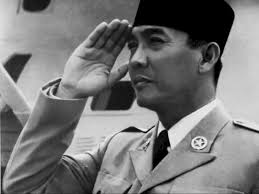
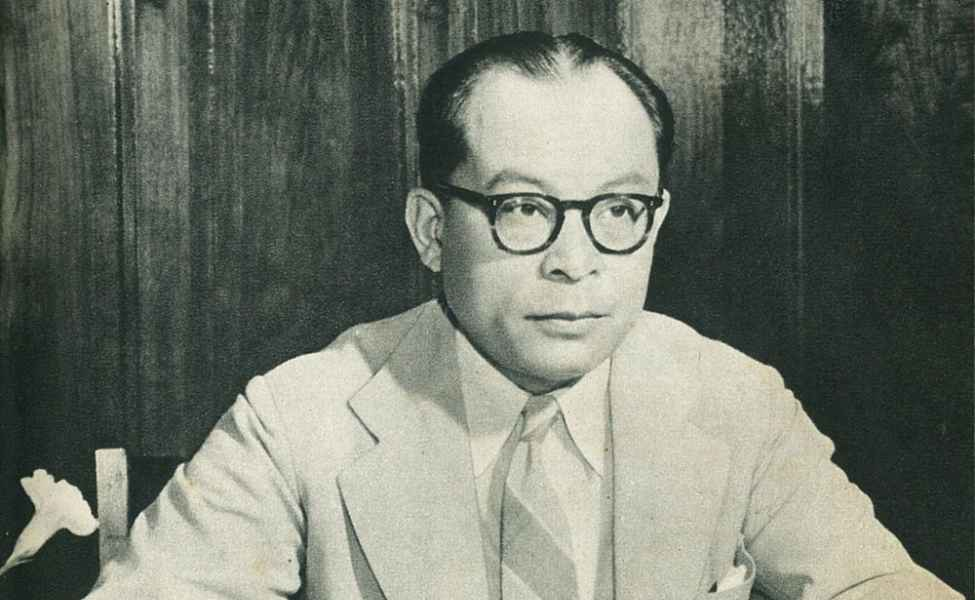

1. Ir. Soekarno
Kehidupan Awal
Ir. Soekarno lahir dengan nama Kusno Sosrodihardjo pada 6 Juni 1901 di Surabaya. Beliau adalah putra dari Raden Soekemi Sosrodihardjo, seorang guru, dan Ida Ayu Nyoman Rai, seorang wanita keturunan Bali. Soekarno mengenyam pendidikan di Hogere Burger School (HBS) di Surabaya dan melanjutkan studinya di Technische Hoogeschool (sekarang ITB) di Bandung, di mana ia memperoleh gelar insinyur.
Karir dan Kontribusi
Soekarno dikenal sebagai pemimpin pergerakan nasional. Pada 1927, ia mendirikan Partai Nasional Indonesia (PNI) untuk memperjuangkan kemerdekaan Indonesia. Beliau memimpin perjuangan politik melawan penjajahan Belanda dan menjadi tokoh sentral dalam persiapan Proklamasi Kemerdekaan pada 17 Agustus 1945, bersama Mohammad Hatta.
2. Drs. Mohammad Hatta
Kehidupan Awal
Mohammad Hatta lahir pada 12 Agustus 1902 di Bukittinggi, Sumatra Barat. Ia berasal dari keluarga Minangkabau dan menunjukkan minat dalam pendidikan sejak kecil. Hatta belajar di Sekolah Dagang Prins Hendrik di Batavia dan kemudian melanjutkan pendidikan ekonomi di Rotterdam, Belanda, di mana ia aktif dalam pergerakan mahasiswa Indonesia.
Karir dan Kontribusi
Hatta adalah salah satu pemimpin pergerakan kemerdekaan Indonesia dan memainkan peran penting dalam diplomasi Indonesia di luar negeri. Bersama Soekarno, Hatta memproklamasikan kemerdekaan Indonesia pada 17 Agustus 1945. Setelah kemerdekaan, ia menjabat sebagai Wakil Presiden pertama Indonesia dan bekerja keras membangun sistem ekonomi nasional yang mandiri.
3. Jenderal Soedirman

Kehidupan Awal
Jenderal Soedirman lahir pada 24 Januari 1916 di Purbalingga, Jawa Tengah. Ia adalah anak dari keluarga sederhana dan aktif dalam organisasi kepemudaan dan pendidikan sejak muda. Pendidikan formalnya tidak tinggi, namun ia dikenal sebagai pribadi yang disiplin dan tegas dalam memperjuangkan nilai-nilai nasionalisme.
Karir dan Kontribusi
Soedirman merupakan panglima besar pertama Tentara Nasional Indonesia (TNI) dan tokoh militer yang memainkan peran penting dalam mempertahankan kemerdekaan. Selama Agresi Militer Belanda II, ia memimpin perang gerilya meskipun dalam kondisi kesehatan yang buruk. Kepemimpinannya menginspirasi banyak pejuang dalam mempertahankan kemerdekaan Indonesia.